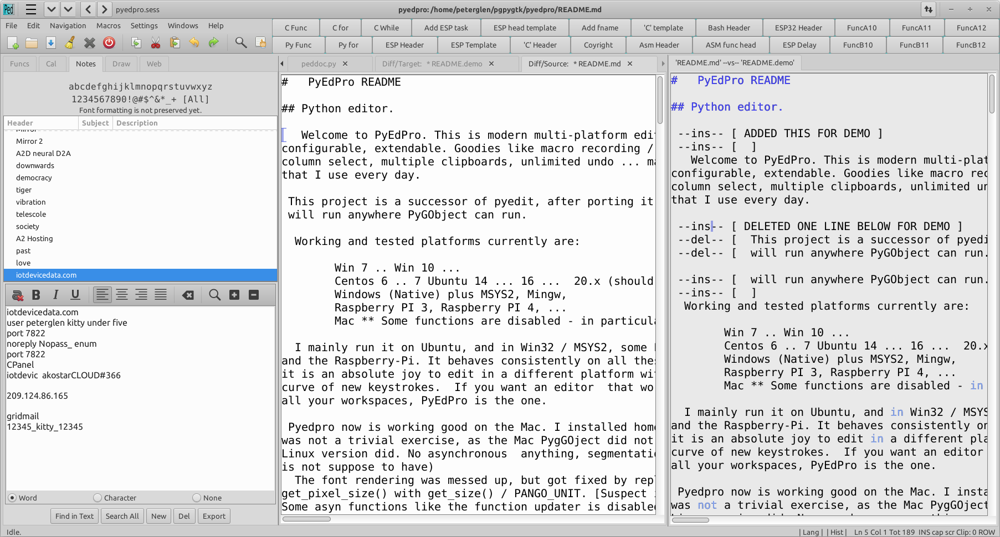
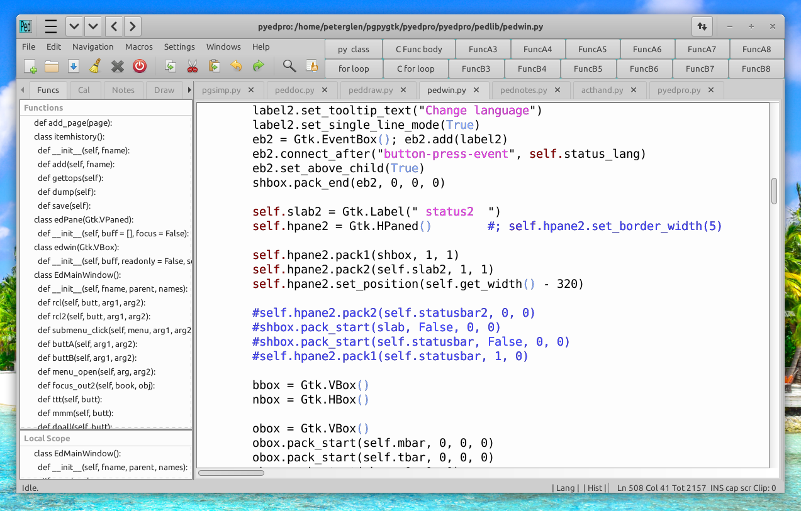
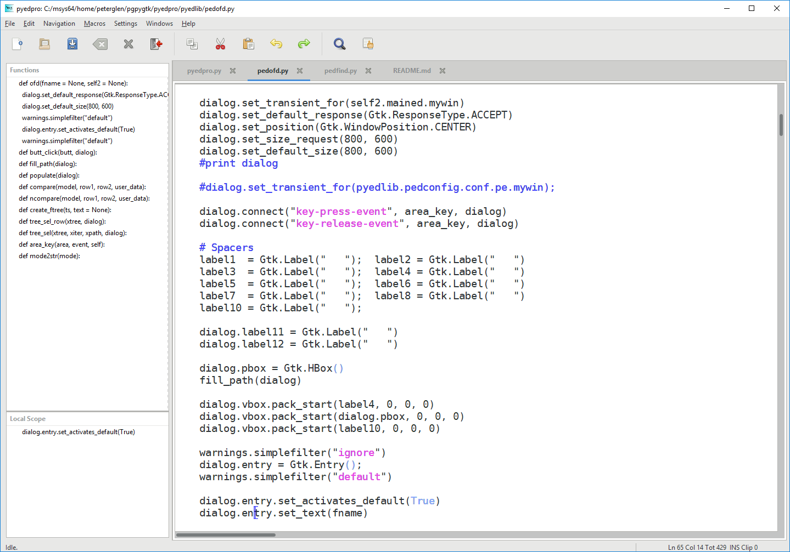
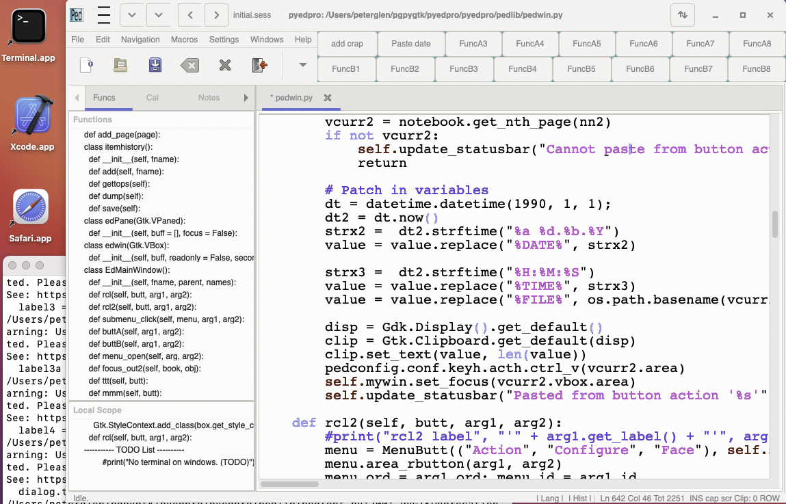
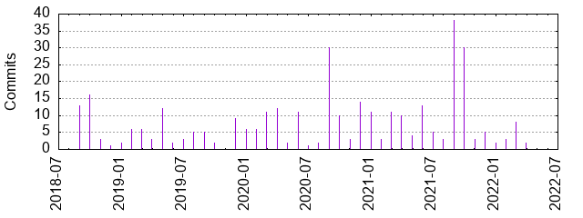

Welcome to PyEdPro. This is modern multi-platform editor. Simple, powerful, configurable, extendable. Goodies like macro recording / playback, spell check, column select, multiple clipboards, unlimited undo ... makes it an editor that I use every day.
This project is a successor of pyedit, after porting it to GTK3. PyEdPro will run anywhere PyGObject can run.
Working and tested platforms currently are:
Win 7 .. Win 10 ...
Centos 6 .. 7 Ubuntu 14 ... 16 ... 20.x (should run on any linux )
Windows (Native) plus MSYS2, Mingw,
Raspberry PI 3, Raspberry PI 4, ...
Mac ** Some functions are disabled - in particular async processing
See Doxygen generated Documentation on GitHub Pages
I mainly run it on Ubuntu, and in Win32 / MSYS2, some Fedora, Windows 10, and the Raspberry-Pi. It behaves consistently on all these platforms, it is an absolute joy to edit in a different platform without the learning curve of new keystrokes. If you want an editor that works the same way in all your workspaces, PyEdPro is the one.
PyEdPro now is working good on the Mac. I installed homebrew, and got it to fire up. It was not a trivial exercise, as the Mac PygGOject did not do half of the stuff as the Linux version did. No asynchronous anything, segmentation faults everywhere. (which python is not suppose to have) The font rendering was messed up, but got fixed by replacing Pango's getpixelsize() with getsize() / PANGOUNIT. [Suspect int vs float accuracy issues] Some asyn functions like the function updater is disabled, but it can be done manually. (right click on doc -> rescan) All in all the Mac's PyGobject is not worth the time, stopped all Mac M1 related efforts.
(this is extracted, use git log for up-to-date information)
Thu 21.Apr.2022 -- release issued
Wed 16.Mar.2022 -- dialog for read only file, export notes lots of others
Wed 01.Dec.2021 -- on search, descending one dir level with Ext. Search
Sun 05.Sep.2021 -- made it function on the Mac M1 laptop - No more mac support
Tue 30.Mar.2021 -- added windows installation executable
Mon 22.Mar.2021 -- added single file (packed) executable. Just download and run.
Partial list, some highlights;
Added drag / drop source / target. New keystroke combo for keyboards without home / pgup etc ... Implemented html preview. Just right click on the file body, an select the corresponding menu item.
Implemented markdown preview. Right click ... menu Implemented M4 preview. The files are pulled in from the current directory, and expanded with the m4 macro processor. The results than are previewed in an html window. (Yes, head and footer are now one file for the whole site, the way it should be) Right click ... and look for: Filter to M4
Added drag and drop. Accepts file name from file manager, and accepts clipboard text. The dropped content is inserted where the editor's caret is. (not where the cursor is) The caret is moved to the end of insertion.
This (above) list is an extract, please see git log for complete history.
PyEdPro now has buffer diff. Right clicking on the file's tab header presents a menu. One may select the diff source, the diff destination (or target). When the source and target is selected, a diff window slides in from the right. The diff window presents the diff of the two buffers, relative to 'target'. The three buffers navigate in sync, one may inspect them and edit the source and the target. The position sync is somewhat intelligent by guessing the correct position of the cursor on the current buffer. One can re-diff the buffers by right clicking on the tab header, and select re-diff. Please note, that this diff is somewhat simple, as it marks only --del --ins points. Again, its simplicity yields benefits that are surprizing. For instance; hand merging small changes become more visual. And yes, it is no substitute for a real diff.
The diff buffer (greyed) is read only. To refresh the diff, select from the tab's right click menu 'Re-diff buffers'. The diff-ing can be stopped from the same right click menu, by selecting 'Stop Diffing'. The diff algorithm is crude, but the simplicity has its advantages. Speed and predictability.
PyEdPro.py has macro recording/play, search/replace, one click function navigation, auto backup, undo/redo, auto complete, auto correct, syntax check, spell suggestion ... and a lot more.
The recorded macros, undo / redo information / editing session detail persists (and reloaded) after the editor is closed.
The spell checker can check text, code and code comments. The parsing of the code is rudimentary, comments and strings are spell checked. (Press F9) The code is filtered out for Python and 'C', which assures most derivative languages have correct code spell code check. (.sh .php .cpp) The whole file can be checked in full text spell mode. Press (Shift-F9) The spell checker is executed on live text. (while typing) The re scan period is set to 300 millisec, an optimum between resource usage and real time feel.
Syntax highlighting. Again, a simpler parser for speed. Succeeds in its mission with giving great visual candy effect without speed impact.
PyEdPro is fast, it is extendable, as python lends itself to easy extending. The editor has a table driven key mapping. One can easily edit the key map in keyhand.py, and the key actions in acthand.py
If you encounter blank screen after start, cairo is not installed. The terminal interface will complain, but if you start from the GUI, you can see the message in the log window. (Menu->Windows->Show_Log) To install cairo type 'sudo apt install cairo'.
The default key map resembles gedit / wed / etp / brief. Full ASCII; Any (fixed) font can be configured. No arrangements in the program for variable pitch fonts.
See KEYS file for the list of keyboard shortcuts or press F1 in the editor or look at the file in pyedlib/KEYS. This file is also called up when the main menu Help -> 'KeyHelp In Doc' is called up.
If you highlight a word, and press F2, Zeal will open with the item searched and highlighted. Shift F2 will do the same with Devhelp. This is what I use to see the API of PyGobj. F1 will call up the PyEdPro's help screen. Shift-F1 will open DevDocs. Naturally, Devdocs/Devhelp/Zeal need to be installed for these to function.
On initial start, PyEdPro shows a left pane and a top pane. The left pane is for function summary and the top pane is for double view of the same file. (to see the caller and the callee at once) These panes can be hidden with the mouse by dragging on their handle, or by the key combination Alt-Q (Shift-Alt-Q for the left pane) The first file window's settings are saved for the next startup.
PyEdPro remembers a lot about the editing session. Loaded files, cursor positions, fonts, font size, colors, search strings, goto numbers, undo / redo info, window positions ... and more.
This is all stored in the ~/.PyEdPro directory. You may safely delete that directory to start PyEdPro with no memory of what has been done.
PyEdPro also keeps a stack of original files in the ~/PyEdPro/data directory. The file path is treated as a name hash, so it is a flat list. For example this file is known to the PyEdPro hash function as '754ad753_. Under this hash name there are a multitude of items. The original file, the numbered backups (from _1 to _9, circular) the undo file, redo file, the auto save (.sav) file, the backup file ).bak) from this session start ... and more. The way to find the file's hash is to switch buffers and the current buffer's hash is displayed on the status line.
Starting PyEdPro with no command line arguments will put you back to the previous session, exactly where you left off.
The editor will work on all PyGobject platforms, and can open UNIX and Windows files transparently. It will save the file as the current platform's native CRLF convention dictates.
Developer's note: in order to make PyEdPro multi platform, we save the configuration info into a SQLite database in the ~/.PyEdPro directory.
(~/ user's home directory)
Contributors are welcome.
The author,
Peter Glen
Latest screen shot, showing DIFF and other new features

Screen from a regular session, including clip buttons ...

Screen from an older session, note the function list on the left:

Screen from Mac:

Project name
PyEdPro
Generated
2022-04-21 13:40:49 (in 3 seconds)
Generator
GitStats (version 55c5c28), git version 2.32.0, gnuplot 5.4 patchlevel 1
Report Period
2018-09-16 00:29:10 to 2022-04-15 10:31:49
Age
1308 days, 166 active days (12.69%)
Total Files
220
Total Lines of Code
476774 (1454450 added, 977676 removed)
Total Commits
347 (average 2.1 commits per active day, 0.3 per all days)
Authors
7 (average 49.6 commits per author)

License: Open Source, FreeWare